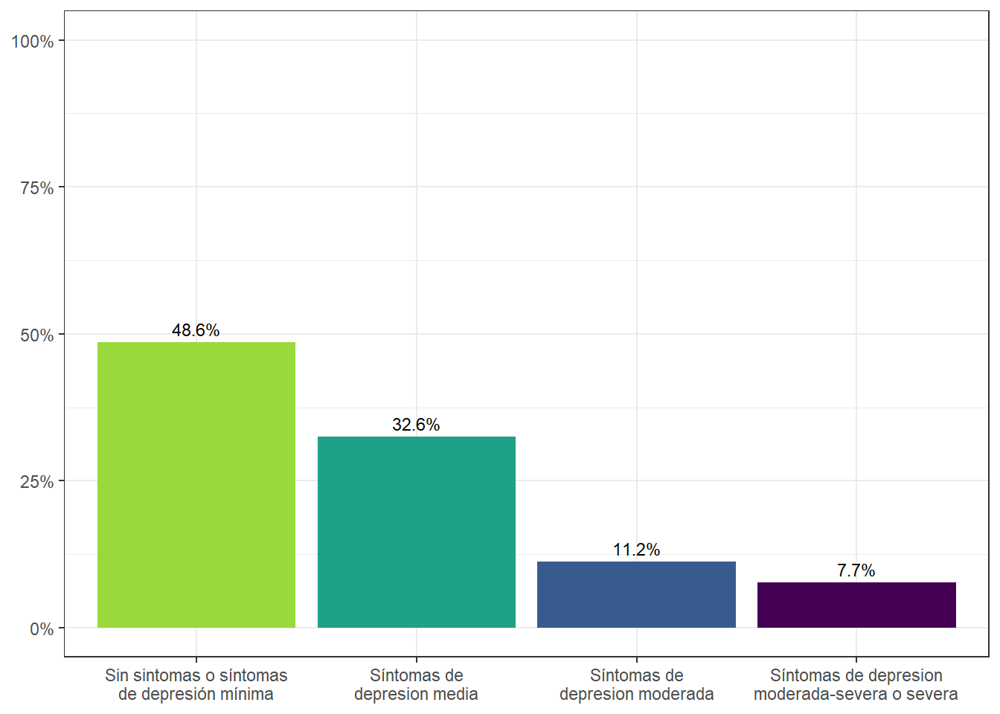
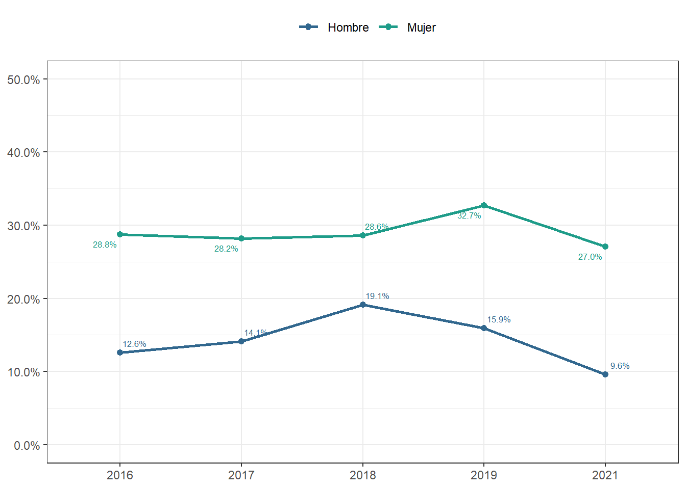
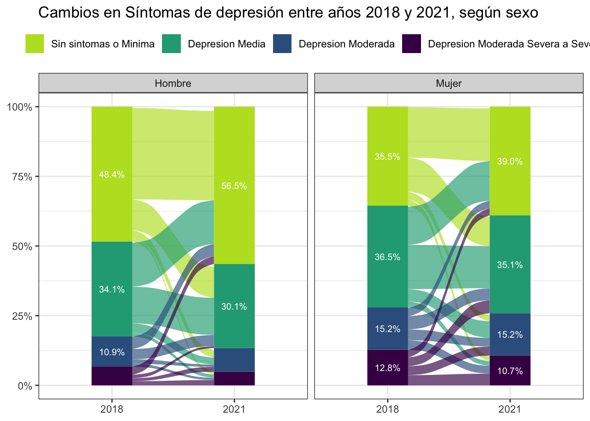
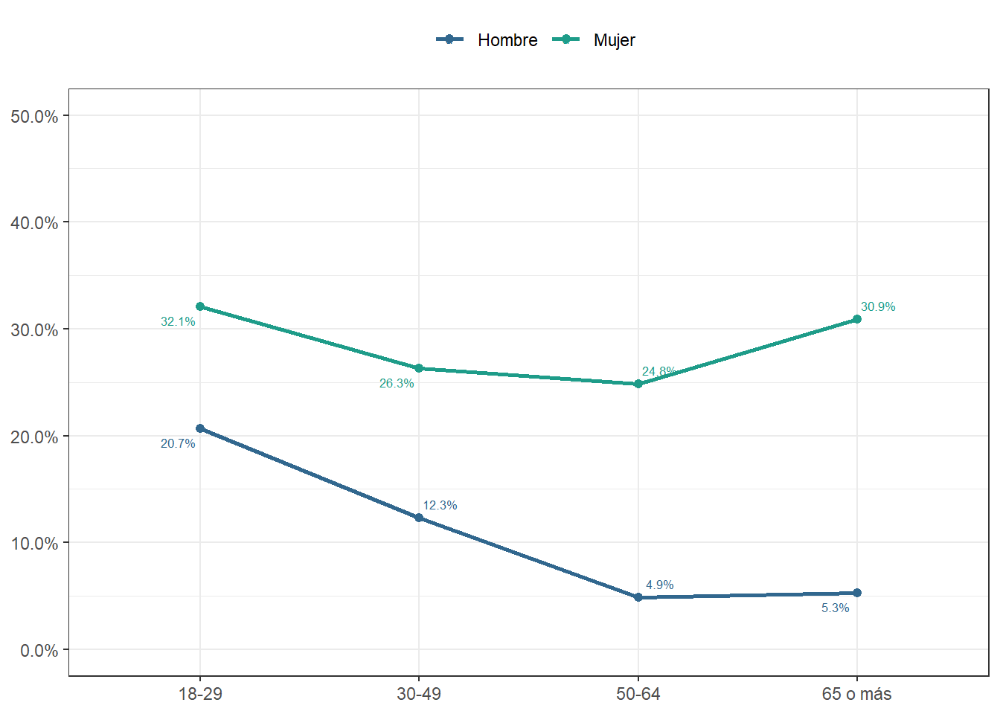
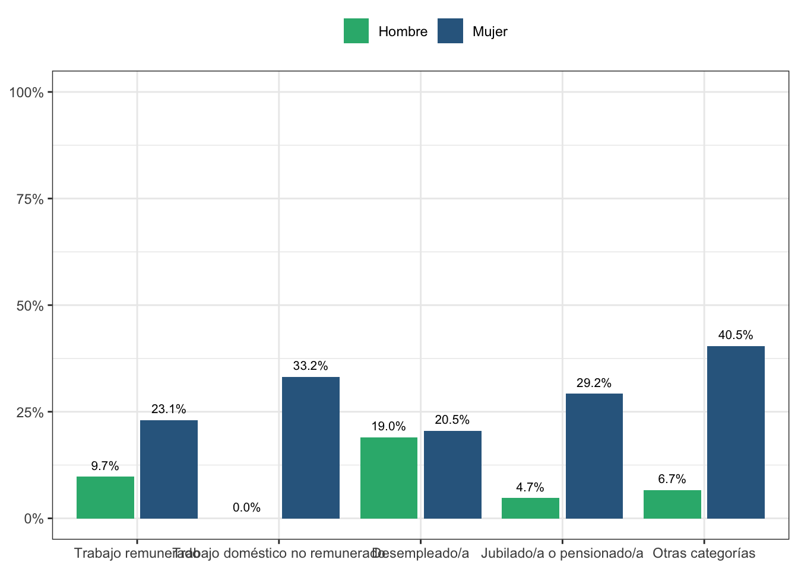
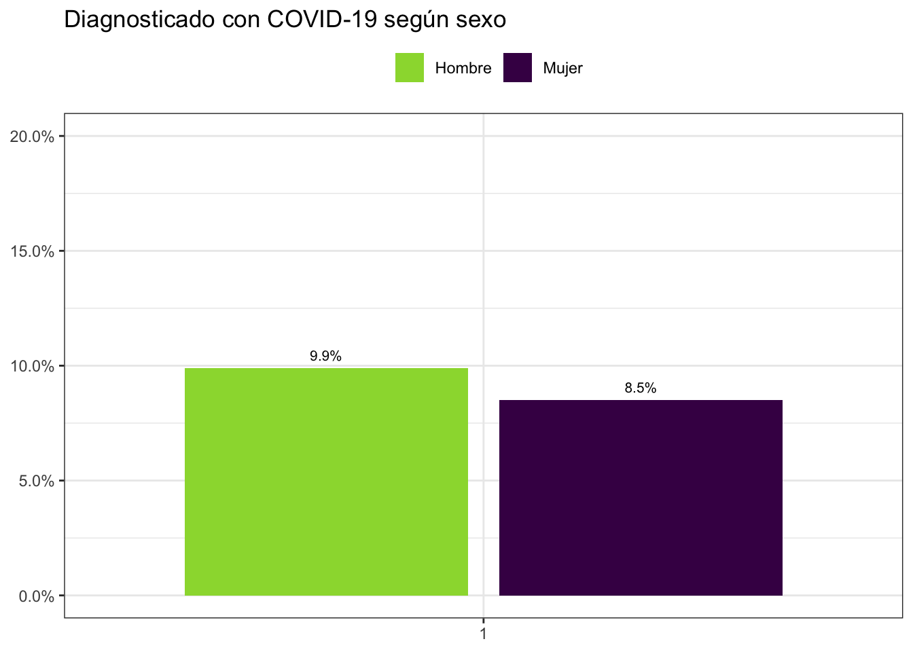
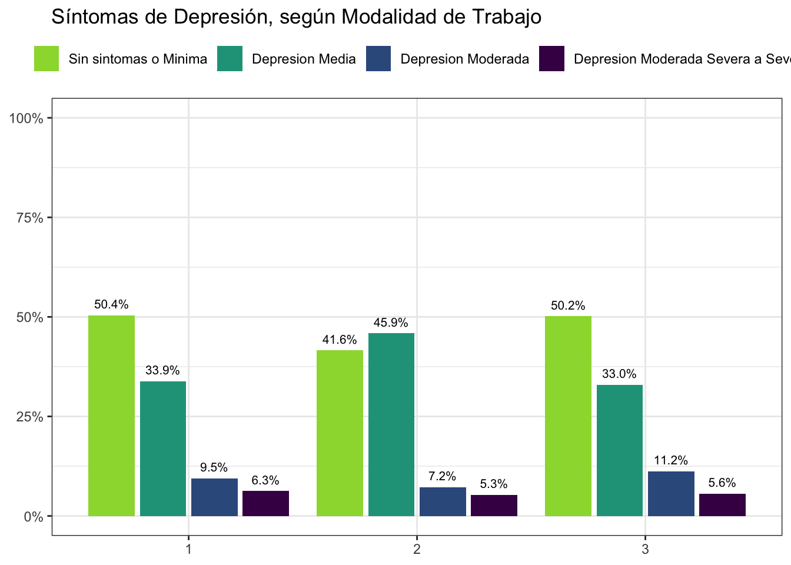
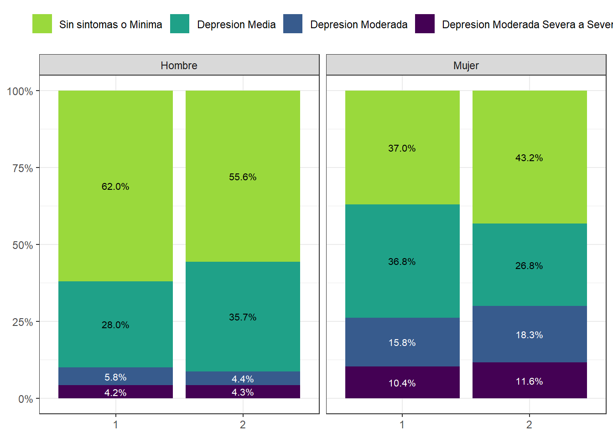

Capítulo 16 Género
16.1 Sexismo hostil y benevolente
Figura 16.1: Cambio en Sexismo benévolo, según ola y sexo .
Figura 16.2: Sexismo hostil, según ola y sexo .
Figura 16.3: Sexismo benévolo y hostil, según sexo (2021). Porcentaje que responde “De acuerdo” o “Totalmente de acuerdo.”
Figura 16.4: Sexismo benévolo y hostil, según nivel educacional (2021). Porcentaje que responde “De acuerdo” o “Totalmente de acuerdo.”
16.2 Roles de Género
(#fig:c19_01)Sexismo hostil, según ola y sexo .
(#fig:c19_02)Sexismo hostil, según ola y sexo .
(#fig:c19_03)Sexismo hostil, según ola y sexo .
(#fig:c19_04)Sexismo hostil, según ola y sexo .
16.3 Trabajo y género
Figura 16.5: Porcentaje de trabajadores y trabajadoras por situación ocupacional (2021), según sexo del entrevistado
Figura 16.6: Porcentaje de trabajadores y trabajadoras no remunerados, según ola y sexo del entrevistado
Figura 16.7: Horas de Cuidado
16.4 Salud mental y bienestar

Figura 16.8: Síntomas de Depresión, según Ola del Estudio y Sobrecarga de Deuda
Figura 16.9: Deuda según ola y Sintomas Depresivos
16.5 Brecha de género en Salud Mental



16.6 Sintomatología depresiva, sexo y ocupación

En 2021 no hay hombres en la categoría Trabajo doméstico no remunerado \(^{*}\)
16.7 COVID - 19

16.8 Salud Mental en COVID-19

